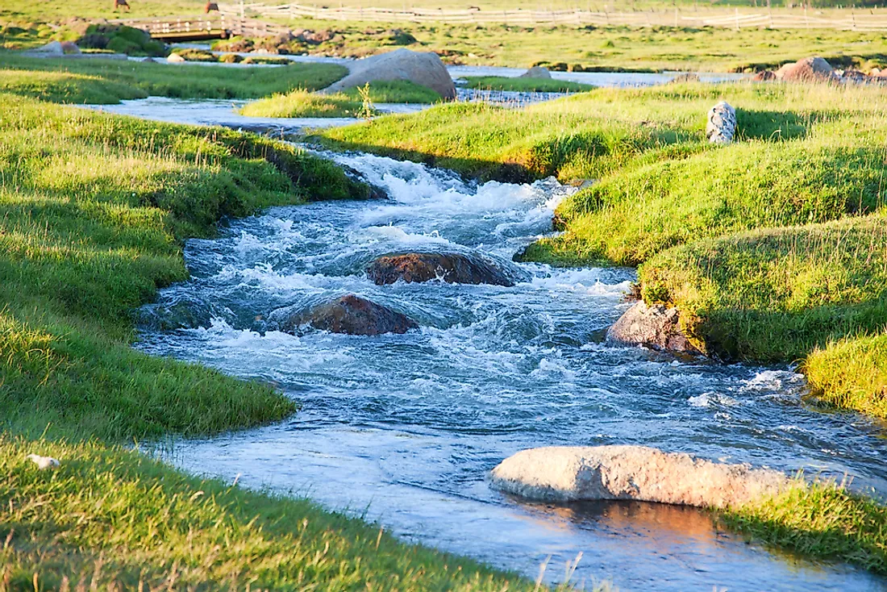

Forests are large areas dominated by trees and other vegetation. They are essential for maintaining the Earth’s ecological balance. Forests provide oxygen, regulate temperature, and support diverse wildlife.
Cover 31% of the Earth's land area
Provide habitat for 80% of terrestrial species
Key types: Tropical, temperate, and boreal forests

Water Bodies
Water bodies include oceans, rivers, lakes, and ponds. They are vital for sustaining life on Earth, providing drinking water, supporting aquatic life, and regulating climate.
Oceans cover over 70% of Earth's surface
Freshwater found in rivers, lakes, and underground aquifers
Support diverse ecosystems
Reptiles
Reptiles are cold-blooded animals with scales, including snakes, lizards, turtles, and crocodiles. They are found in various habitats and play crucial roles in the ecosystem as predators and prey.
Found on every continent except Antarctica
Rely on external heat to regulate body temperature
Include venomous and non-venomous species
Wildlife refers to all animals, plants, and microorganisms that live in their natural habitats without human interference. It includes creatures ranging from tiny insects to majestic mammals like lions and elephants, all of which play a vital role in maintaining the balance of ecosystems. Wildlife contributes to the health of the environment by pollinating plants, dispersing seeds, and controlling pests. However, human activities such as deforestation, poaching, and pollution are threatening wildlife, pushing many species to the brink of extinction. Protecting wildlife is essential not only for biodiversity but also for the survival of humanity, as a healthy ecosystem supports clean air, water, and fertile soil.